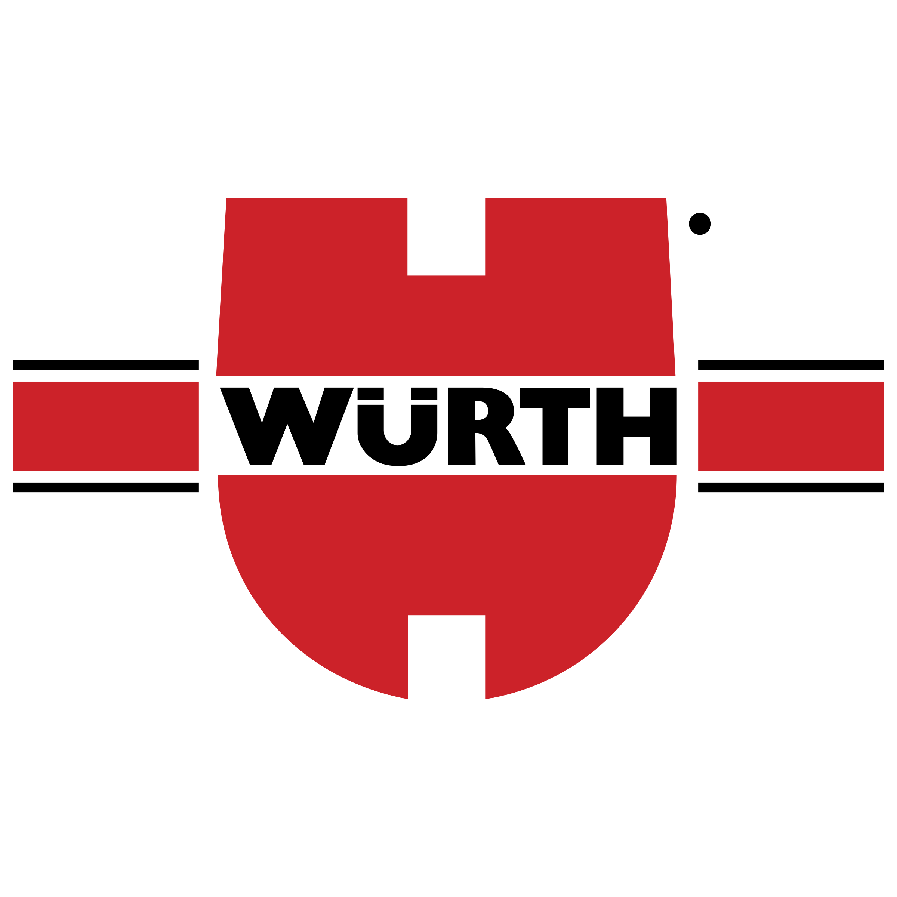
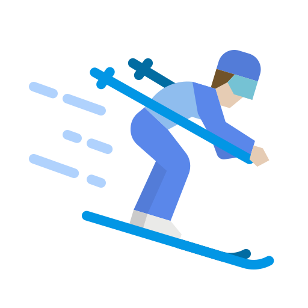
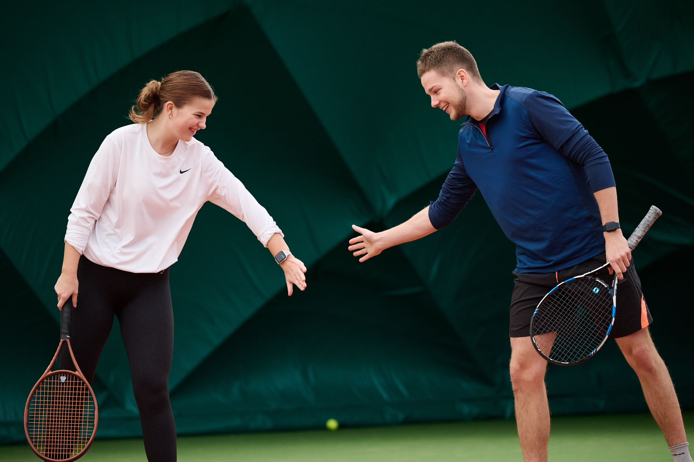
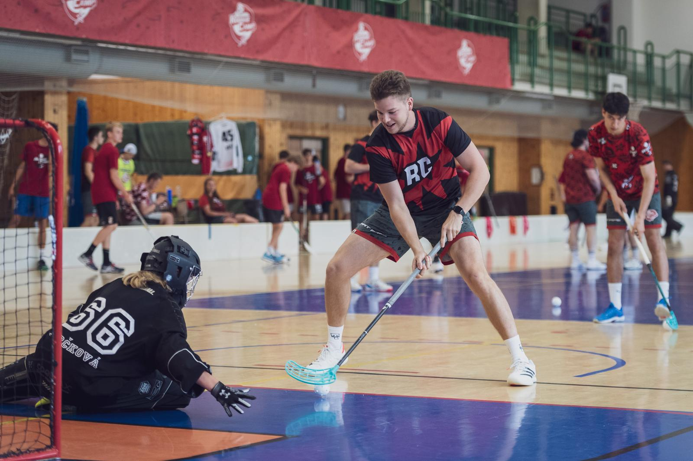

WHO AM I
KDO JSEM
I'm Martin Kafka, 25, a data analytics student from the Czech Republic. I like taking messy data — spreadsheets,
logs, survey exports — and turning it into something someone can actually act on: a dashboard, a model, a clear
answer to a real question. So far that's mostly meant statistical modeling and business analytics, with machine
learning as the part I'm still deepening.
🔹 Comfortable with ETL pipelines, SQL, and Python
🔹 Interested in predictive analytics and geospatial data
🔹 Prefer projects that end in a decision, not just a report
MY STORY
MŮJ PŘÍBĚH
I actually started in nuclear physics. The numbers stayed abstract to me — I couldn't touch them, picture them, or really tell if I understood them.
Data analysis and statistics fixed that: suddenly a number came with a chart, a trend, a reason someone might care about it.
For my Master's I moved to Bolzano, Italy, where the work got more hands-on — machine learning, deep learning, and a lot more time spent making results readable through visualization.
Living and studying abroad also just forced me to get better at picking apart a problem I didn't already have a template for.

SKILLS
DOVEDNOSTI
Data Analysis
Analýza dat
Most of my work sits somewhere between statistical modeling, machine learning, and business analytics — figuring out what a dataset is actually telling you, not just what it looks like at first glance. R and Python cover both the analysis and the visualization side for me.
Leadership
Vedení týmu
Coaching a sports team, sitting on a grant project, and playing in a band taught me more about leadership and communication than any course did — mostly because none of those settings let you fake it. If something breaks mid-game or mid-rehearsal, you sort it out with the people in front of you, right then.
USING NOW:
AKTUÁLNĚ POUŽÍVÁM:

Python
R

PowerBI

Microsoft Office

SQL
Git

Copilot Studio
Azure AI Foundry

Microsoft Fabric
LANGUAGES:
JAZYKY:

CZECH — native
ČEŠTINA — rodilý mluvčí

ENGLISH — professional
ANGLIČTINA — profesionální

GERMAN — B1
NĚMČINA — B1
EDUCATION
VZDĚLÁNÍ
PROJECTS & PUBLICATIONS
PROJEKTY & PUBLIKACE
2020 – 2021 | IGA — Financing of Higher Education
Impact of financing on quality of education in higher education.
2022 | Bachelor Thesis
Analyzing the relationship between teachers' publication activity and their evaluations.
2022 | Publication — He who researches well, teaches well: myth or not?
An article exploring the connection between research activity and teaching quality.

2025 | Capstone Project
Analyzing geospatial influence on product ordering at Würth Italia.
HOBBIES
KONÍČKY
Floorball
Florbal
Coppa Italia champion, youth team runner-up in Czech Republic, currently playing for SSV Bozen.
Coach
Trenér
Licensed trainer with experience in Czech and Italian academy teams.

Skiing Instructor
Instruktor lyžování
Certified instructor with experience in primary school skiing courses.
Healthy Lifestyle
Zdravý životní styl
As a Type 1 diabetic, staying active helps me manage my condition.
Other Sports
Další sporty
Actively playing volleyball, tennis, and doing fitness.
Music
Hudba
Playing piano since childhood, performed solo & in a Rammstein revival band.


CONTACT
KONTAKT
martinkafka9@gmail.com
+420 739-107-540